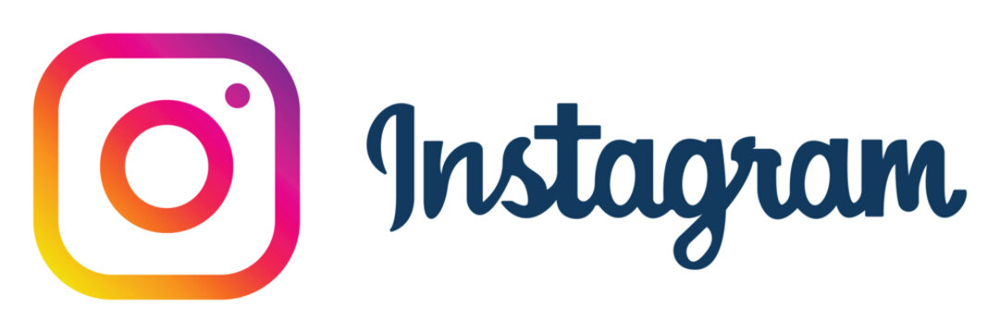

Hi! I'm Fanny Raskind.
I’m a curious and creative Computer Science and UX Research/Design student at the University of Michigan. I’m passionate about the interdisciplinary connections between technology, human behavior, and design.
________________________
________________________

my work
get a quick view at some of the projects I have worked on and am most proud of ↓
CS projects

Social Media Platform
React.js
SQL
REST API
Jinja2
Flask
Git
AWS
I developed a full-stack social media platform via Flask.
This social media platform queries SQL databases to populate 12 Jinja HTML templates and updates databases upon account and post creations; utilized session cookies/hashing for verification. I enabled dynamic likes, comments, and infinite scrolling with React components via HTTP request methods. I also Utilized JSON-based REST API architecture; deployed to AWS EC2 instance.
General Motors Data Pipeline
React.js
SQL
Flask
Git
Figma
UX Design
Designed and built a unified data pipeline and database.
I designed and build a unified data pipeline and database to connect vehicle features and system data within legacy IT systems to GM’s current software services ecosystem. I also developed a user interface for program displaying important data and corresponding training manual.
UX projects
Recycling and Sustainability Platform
Figma
UX Design
UX Research
Prototyping
Interviews
Designed an app aimed to create more sustainable communities.
I designed and build a unified data pipeline and database to connect vehicle features and system data within legacy IT systems to GM’s current software services ecosystem. I also developed a user interface for program displaying important data and corresponding training manual.
Atlas Website Redesign
Figma
UX Design
Prototyping
Modernized the design and user experience for a professional website.
For my tech consulting club on campus, I helped redesign our website in order to attract more clients. We modernized it and still kept it fun!